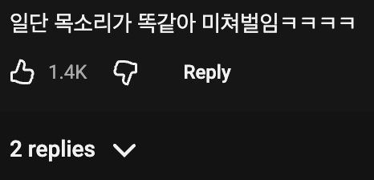
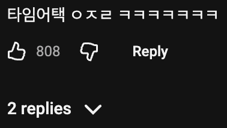
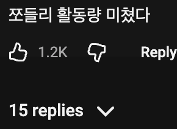

20년전에도 분무기에 넣은 간장 뿌려먹었는디..
이분 항공사 1등석 리뷰하시는분 아님?ㅋㅋ
그건 쪼들리가 아니라 더들리임
ㅇㅎ
짭들리ㅋㅋㅋㅋ
ㅋㅋㅋㅋㅋㅋㅋㅋ 이렇게 리뷰 보니까 평소 걍 지나가는 지하철 분식집이 맛있어보이네 ㅋㅋ
짭들리 컨셉 재밌어서 인스타 팔로우했는데
뭔 셀카만 잔뜩 올라오길래 바로 취소함
계정 운용하는 노하우가 없는듯
드립계정 개인계정 따로 운용하면 팔로워 더 늘텐데
돈많아서 취미로 하나보지
말투똑같네 더들리랑 똑같네 ㅋㅋ
스리미가 뭐냐?
그 패 봐봐!
그런 예리미잖아 ㅋㅋ
すり身
생선살에 소금 넣고 절구같은데서 갈아주면 뭐시기랑 뭐시기가 결합해서 끈적한 반죽이 됨
이걸 스리미라고 함
거기다 추가로 이것저것 첨가해서 튀기거나 찌면 어묵이 되용
와 저기 매장은 공동창업주가 세명이나 있네
임마도 유벨스의 냄새가 나네
유벨스 ㅋㅋㅋㅋ
쪼들리 컨셉으로 광고 받은 다음 찐더들리가 주의줘서 컨셉유지 못하다던데
1,2000원 ㅅㅂ
쪼들리 ㅋㅋㅋㅋㅋㅋㅋㅋㅋ
1,2000원 쉼표 개열받네ㅋㅋㅋㅋ
요새는 간장을 저렇게 하는구나
왜 옛날에는 저생각을 못했지